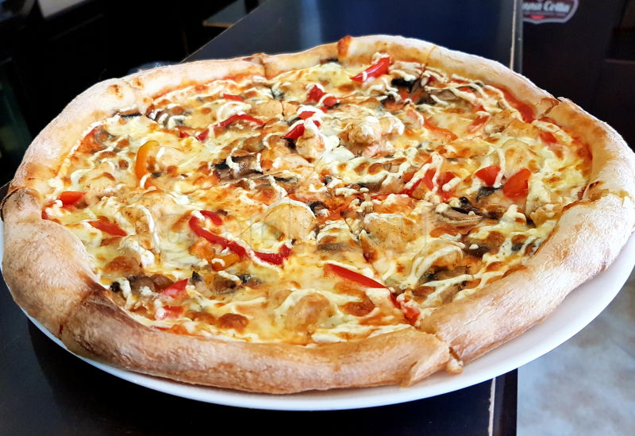

Hello, this is the Pizza Polo e Funghi recipe, my favorite pizza!
Prep time: 1 hr
Cook time: 12-15 mins
Total time: 1hr 15mins
Ingredients:
- 60g Béchamel
- 70g Mozzarella
- 70g Cooked chicken (torn)
- 28g Red onion (sliced)
- 40g Cup mushrooms (sliced)
- Pinch black pepper
- 2 Pinches parsley (chopped)
Preparation:
- Preheat the oven to 230°C
- On a well-floured surface, use a rolling pin to roll the dough into a round, thin pizza base. Place on a lightly oiled,
non-stick baking tray (we used a round one, but any shape will do!)
- Spread the béchamel on top making sure you almost go to the edge
- Add the red onion and mushrooms
- Add the chicken and the mozzarella then top with black pepper
- Cook in the oven for 10-15 or until the crust is golden
- Top with fresh parsley and serve
This should be the final result if you did everything in order:
